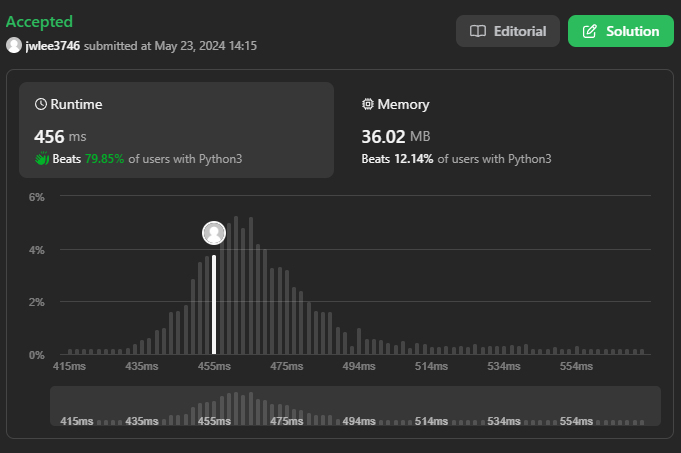
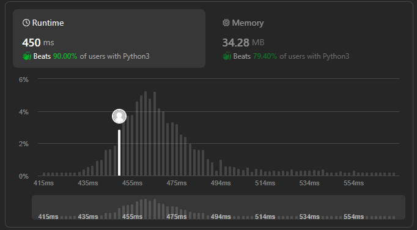

[Leetcode] 131. Palindrome Partitioning - Python, dp, backtrack
리트코드 131번 문제 풀이.
#Algorithm
문제
난이도: Medium
Given a string s, partition s such that every substring of the partition is a palindrome. Return all possible palindrome partitioning of s.
Example 1:
Input: s = "aab" Output: [["a","a","b"],["aa","b"]]Example 2:
Input: s = "a" Output: [["a"]]
Constraints:
- 1 <= s.length <= 16
- s contains only lowercase English letters.
접근
자주 등장하는 substring + palindrome 문제
이 문제가 다른 점은 partitioning 후 모든 경우의 수를 return 해야 한다는 점이다.
- 완전 탐색(dfs)
- 백트래킹
- Bottom-up DP
- Top-down DP
1번의 경우는 edge case에서 time out이 우려된다. 따라서 첫 번째 풀이는 생각해내기 쉽게 4번 풀이를 사용했다.
풀이
1 round (Top-down DP)
class Solution:
def partition(self, s: str) -> List[List[str]]:
# s: 1~16
# rec + dp
N = len(s)
def isPalindrome(word):
len_ = len(word)
for idx in range(len_//2):
if word[idx] != word[-1-idx]:
return False
return True
@lru_cache(None)
def rec(idx):
answer = []
if idx == N:
return answer
for right in range(idx+1, N+1):
if isPalindrome(s[idx:right]):
temp = rec(right)
if temp:
for l in temp:
answer.append([s[idx:right]] + l)
else:
answer.append([s[idx:right]])
return answer
return rec(0)
속도는 나쁘지 않으나 lru_cache(None) 사용으로 메모리 사용량이 높다.
2 round (backtrack)
class Solution:
def partition(self, s: str) -> List[List[str]]:
N = len(s)
answer, temp = [], []
def isPalindrome(word):
len_ = len(word)
for idx in range(len_//2):
if word[idx] != word[-1-idx]:
return False
return True
def backtrack(left):
nonlocal answer, temp
if left == N:
answer.append([e for e in temp])
return
for right in range(left+1, N+1):
if isPalindrome(s[left:right]):
temp.append(s[left:right])
backtrack(right)
temp.pop()
backtrack(0)
return answer속도가 dp에 비해 느리다.
3 round (bottom-up DP)
class Solution:
def partition(self, s: str) -> List[List[str]]:
N = len(s)
dp = [[] for _ in range(N+1)] # (left, list)
dp[N] = [[]]
def isPalindrome(word):
for idx in range(len(word)//2):
if word[idx] != word[-1-idx]:
return False
return True
for left in range(N-1,-1,-1):
for right in range(left+1, N+1):
if not isPalindrome(s[left:right]):
continue
for l in dp[right]:
dp[left].append([s[left:right]] + l)
return dp[0]